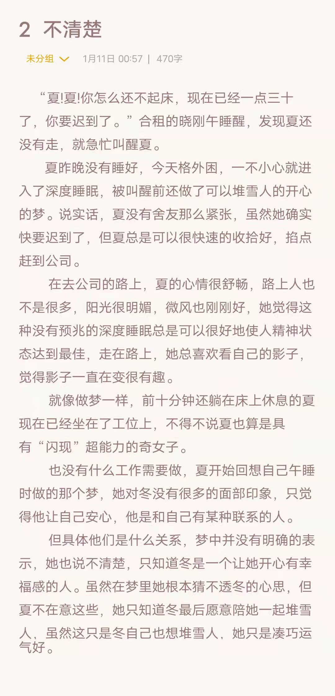

Part 2 : Novels¶
2.1 First book(try)¶
Emm，就随便写的，算一个开始吧，只是感觉好玩而已，那就玩儿！
2.1.1 fragment 1¶
就写了一个脑海中很温馨的画面^_^ ^_^
2.1.2 fragment 2¶
是在做梦没错了，hhh^_^ ^_^
2.2 Funny stories¶
2.2.1 演唱会风波¶
2.2.2 演唱会风波续集¶
来自微博ID：蒙奇奇果栋
蟹蟹蒙奇奇给我圆梦，哈哈哈哈，这么羞耻，我不敢写，蟹蟹你先替我写了一段出来

2.2.3 如果可以穿越——卧室里的那面镜子1¶
帅气梁仔想穿越去哪里，一定是我这里，hhhh，爱你每一天yeah！

2.2.4 如果可以穿越——卧室里的那面镜子2¶
如果可以穿越，请来我身边，哈哈哈哈，重要的事情需要一直强调KKK
2.3 Coffee Stories¶
2.3.1 第一杯咖啡好喝吗~¶
⭐**作者微博ID**：@张先生的果冻 👏🏻👏🏻👏🏻
⭐**女主**：夏（我寄几）🌝🌝